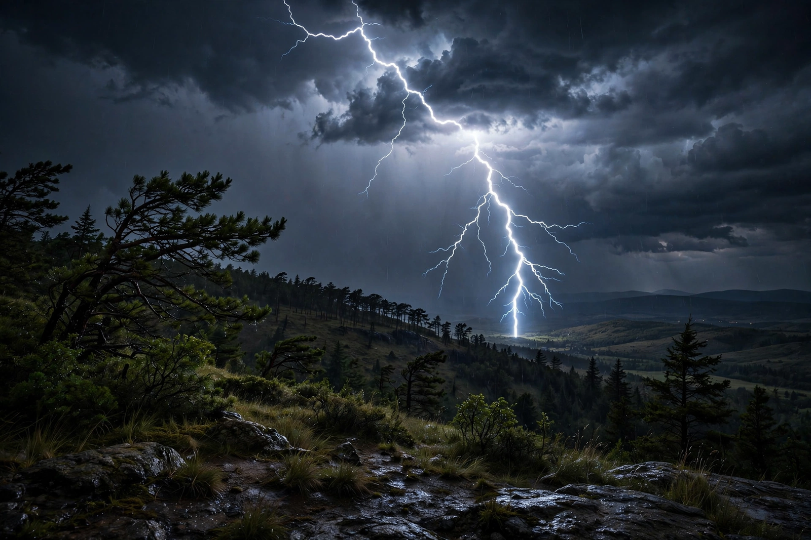

Electricity
| Related phenomena | Magnetism, lightning, static electricity |
|---|---|
| Key laws | Maxwell's equations; Ohm's law |
| Everyday meaning | Supply of electric power |

[Image: lightning striking over a night landscape, forking bolts illuminating storm clouds]Electricity is the set of physical phenomena associated with the presence and motion of matter possessing an electric charge. Electricity is related to magnetism, both being part of the phenomenon of electromagnetism, as described by Maxwell's equations. Lightning, static electricity, electric heating, electric discharges and many other familiar phenomena arise from it, and it powers much of the modern world.
In everyday usage, 'electricity' usually means the supply of electric power — generated in power stations or by batteries and solar cells, delivered by grids, and used for light, heat, motion, communication and computation.
Science
Electric charge, carried by electrons and ions, produces electric fields and currents; its behaviour was mapped by Coulomb, Volta, Ampère, Ohm and Faraday, and unified by Maxwell in the 1860s. Electric circuits are analysed with Ohm's law and Kirchhoff's laws; power systems use alternating current, standardised in the 'war of the currents' of the 1880s–90s in favour of AC for transmission.
Static electricity was known in antiquity — the word derives from the Greek elektron, amber, which attracts light objects when rubbed — but electricity became a technology only in the nineteenth century, with the battery (1800), telegraph, motor, generator and lamp.
Generation and use
Electricity is generated from coal, gas, nuclear fission, hydroelectric, wind, solar and other sources; the global mix is shifting toward renewables as the cheapest new capacity in many regions. It accounts for roughly a fifth of final energy use worldwide, a share expected to grow with electric vehicles and heat pumps.
Access is near-universal in rich countries but hundreds of millions of people still lack it, making electrification a central development and climate goal.